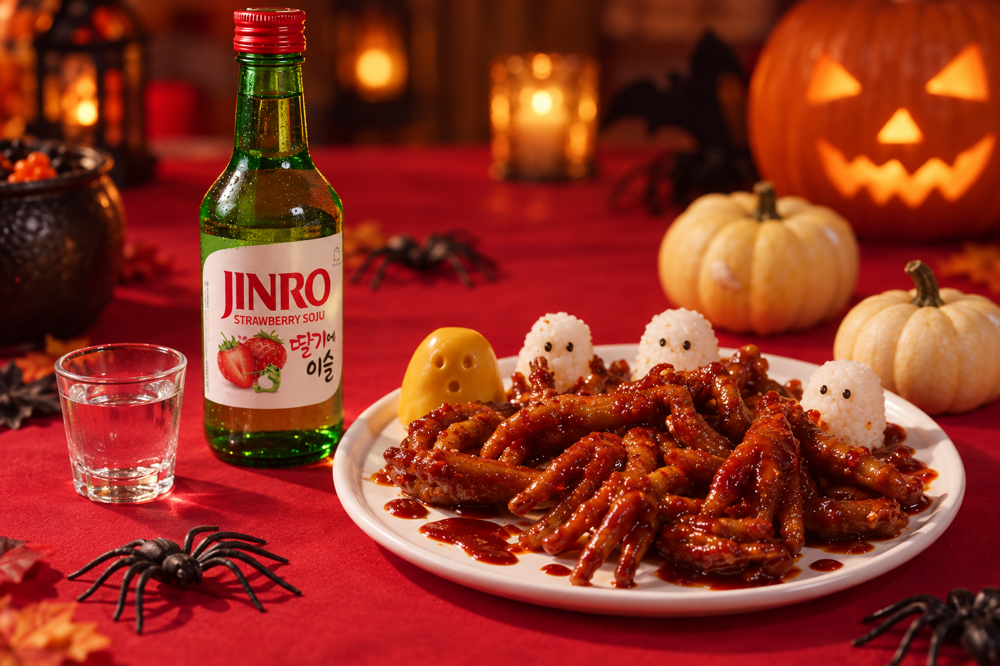
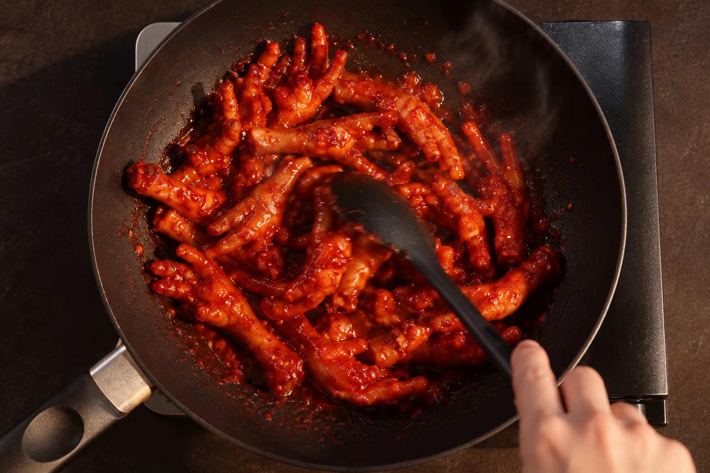
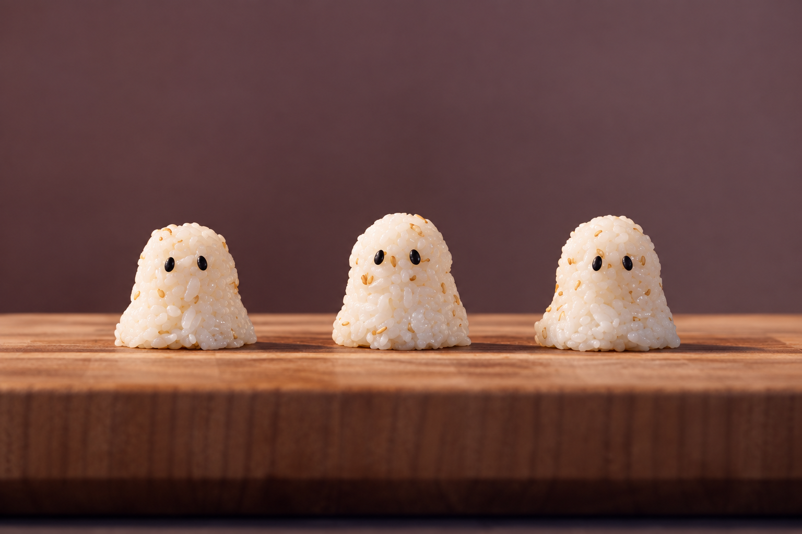
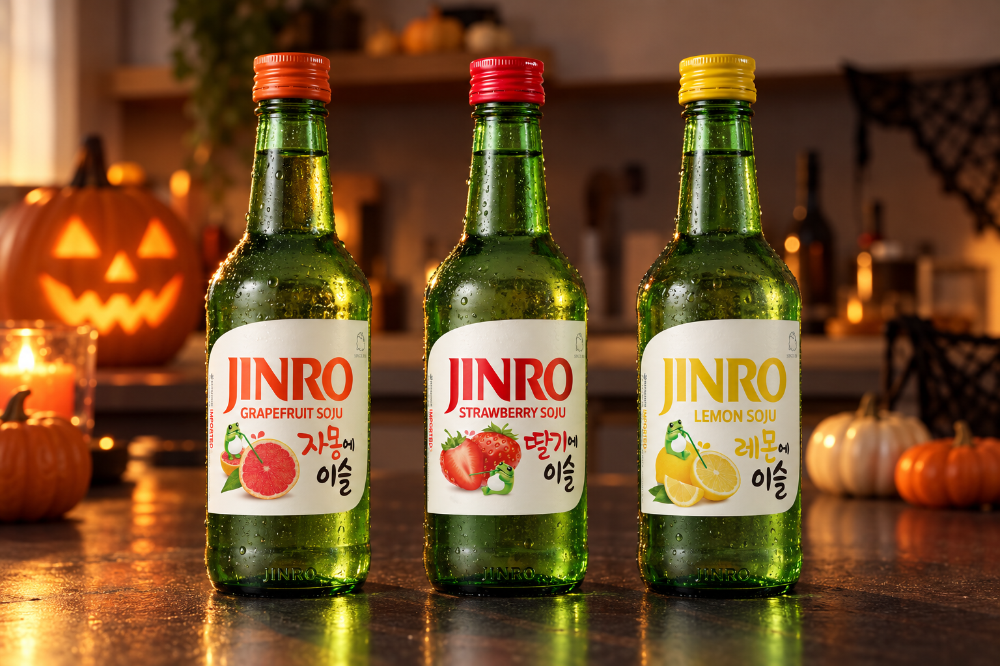

選擇你的顏色：用 JINRO 搭配的萬聖節驚悚下酒菜
血紅色的辣雞爪，再加上小小的幽靈飯糰，就是一桌簡單的韓式萬聖節料理。以下分享兩道菜的做法，以及如何挑選相配的 JINRO。
萬聖節最重要的就是造型：服裝、妝容，還有大合照。今年，讓你的點心桌也一起變裝吧。
「Anju」是韓文中下酒菜的意思。這次萬聖節，我們以紅與白為主題：裹著深紅醬汁的辣雞爪，以及做成幽靈造型的小飯糰。

血紅辣雞爪：萬聖節紅的韓式下酒菜
辣雞爪（Dakbal）是韓國很受歡迎的下酒菜。辣椒醬汁會變成深紅又帶光澤的顏色，非常適合萬聖節。
沒吃過雞爪嗎？可以把它想成一道有嚼勁、醬汁滿滿、用手拿著吃的小點心。記得在旁邊多準備幾張紙巾。
材料
- 雞爪 500 g
- JINRO 燒酒 1 杯（汆燙用）
- 青蔥 1 根
- 黑胡椒粒 1 小匙
- 蒜頭 5 瓣，切末
- 細辣椒粉 2 大匙
- 醬油 1 大匙
- 香油 1 小匙
- 胡椒粉 少許
做法
- 雞爪洗淨後，放入加了 JINRO、青蔥和黑胡椒粒的水中煮至軟嫩，再撈起瀝乾。
- 在碗中放入雞爪，加入蒜末、辣椒粉、醬油、香油和胡椒粉拌勻。
- 以中火拌炒，加入少許水，煮到醬汁變得濃稠有光澤即可。
韓國人在家料理時，常會在汆燙的水中加入燒酒來去除腥味。想吃得溫和一點的話，可以減少辣椒粉的份量。

幽靈飯糰：最簡單的萬聖節點心
這些小幽靈只要幾分鐘就能完成，也不需要任何特別的工具。
材料
- 溫熱白飯 1 碗
- 白芝麻 1/2 大匙
- 香油 1/2 大匙
- 鹽 少許
- 黑芝麻（做眼睛用）
做法
- 將白飯與白芝麻、香油和鹽拌勻。
- 雙手沾濕，把飯捏成底部較寬、頂部圓圓的小山形，就像披著床單的幽靈。
- 在每顆飯糰上壓入兩顆黑芝麻當作眼睛。
把幽靈飯糰放在辣雞爪上，萬聖節餐盤就完成了。清淡的白飯也能中和辣醬的辣味。

萬聖節餐桌小技巧
雞爪可以在當天提早煮好，等朋友快到時再裹上醬汁拌炒。飯糰也可以事先捏好。
餐桌布置只需要一塊紅色桌巾、幾顆迷你南瓜和一些塑膠蜘蛛。拍照時，從上方拍攝餐盤，紅色醬汁和白色幽靈會更加顯眼。
用 JINRO 選擇你的顏色
如果想在萬聖節餐桌上加入 JINRO，可以挑選與餐桌顏色相配的口味，冰涼享用。
紅色：JINRO Strawberry
香甜的草莓風味與辣椒醬汁形成清爽的對比，也很適合紅色的萬聖節主題。
粉色：JINRO Grapefruit
JINRO Grapefruit 帶有清爽微酸的柑橘風味，與濃郁的醬汁十分相配。
黃色：JINRO Lemon
JINRO Lemon 口味乾淨清新，適合搭配清淡的芝麻飯糰。

無論你選擇哪一種顏色，這個夜晚最棒的，還是和朋友們一起分享這張餐桌。
想看更多韓國美食與 JINRO 搭配提案，歡迎追蹤 JINRO Global 官方 Instagram、Facebook 與 YouTube。
本文僅供已達法定飲酒年齡的讀者閱讀。請理性、適量享用 JINRO，切勿酒後駕車。